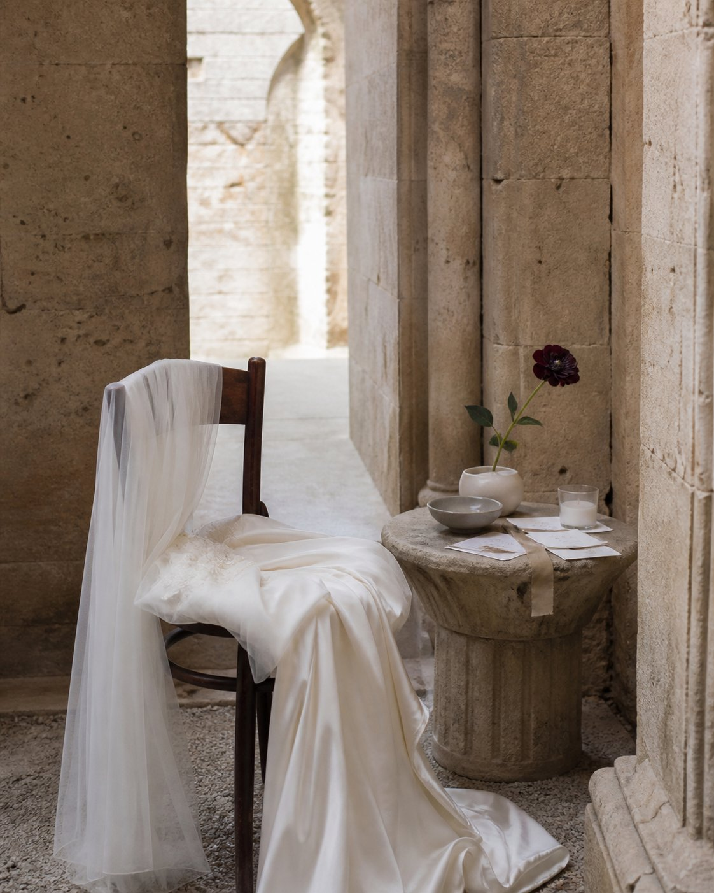

01 / Objects of Desire
Fruit & Patina.
Antique silver, richly toned fruit and sculptural arrangements. A more expressive approach to the wedding table, where materials and composition lead the story.
LIA ARMONÍA / THE CURRENT EDIT / AUTUMN 2026
An editorial perspective on the season’s most captivating wedding design, where couture detail meets a sense of place.
Antique silver, richly toned fruit and sculptural arrangements. A more expressive approach to the wedding table, where materials and composition lead the story.

Couture silhouettes, undone beauty and movement. Bridal imagery that feels more like an art-directed fashion story than a traditional portrait.

Soft movement against historic architecture, sculptural details and romantic layers, interpreted with a contemporary restraint.
From old-world romance to a new kind of wedding expression.
Explore the atelier